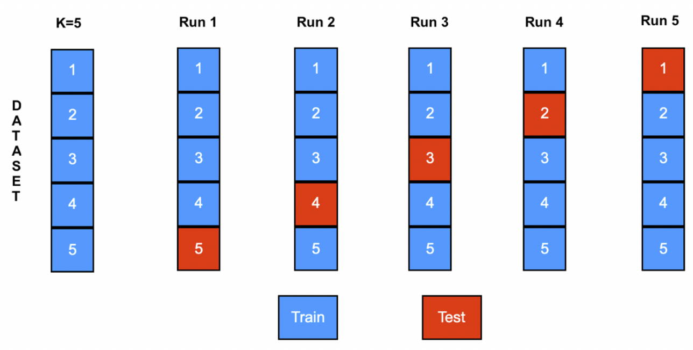
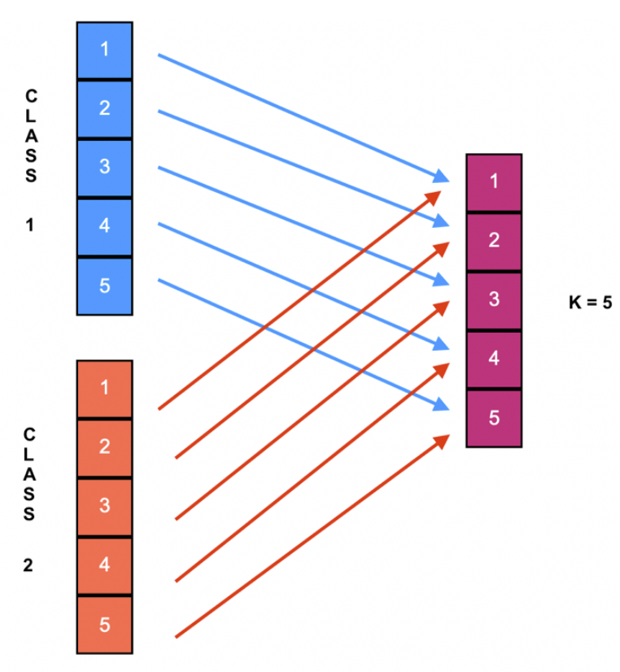

Capitule 3. Division of the dataset
We need two main subsets before classification, i.e., training and testing. To obtain these subsets is
necessary to implement a technique as K-fold cross-validation stratified, Hold-Out stratified, or
Leave One-Out.
- K-fold cross-validation stratified: The first step is stratified all the dataset. Second, ordering aleatory each class. Then, divide the dataset in K folds of the same size, K-1 folds constituted the training set, and the rest formed the test set. The procedure is repeated K times. The elements that compose each K folds is per class.
- Hold-Out stratified: The first step is stratified all the dataset. Second, ordering aleatory each class. Then, select (aleatory) the percent assigned for the training set; the rest will be the test set.
- Leave One-Out: This technique does not employ the randomness. It is a particular case of the K-fold cross-validation technique, where the value of K is the total number of the instances (a.k.a. patterns).
K-fold cross-validation stratified with K=5.

Selection of instances with K=5.

TASK FOR YOU:
- Get the recent list of the magazines that belong to the Journal Citation Reports (JCR).
- Investigate in JCR papers the typical values that machine learning researches use for K-fold cross-validation (e.g., K=5) and Hold-Out.
- Which are the typical values for K-fold cross-validation and Hold-Out?
- Which division method is most common to use?